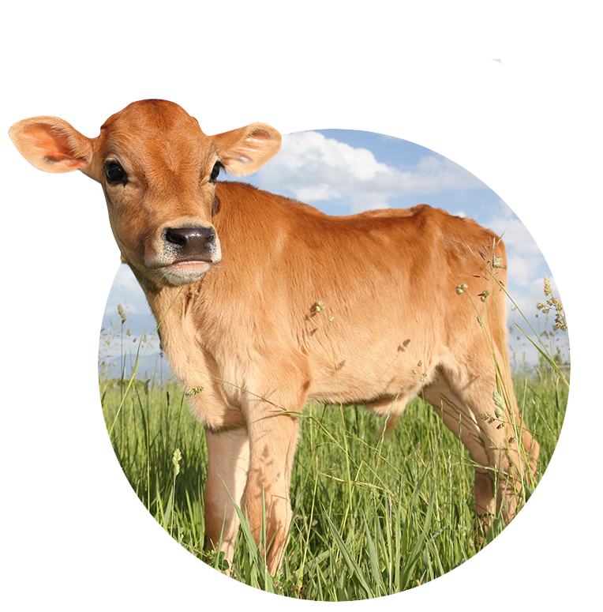

Saiba mais sobre o veganismo
VEGANISMO, ESTILO DE VIDA!
ㅤ“Veganismo é uma filosofia e estilo de vida que busca excluir, na medida do possível e praticável,
ㅤtodas as formas de exploração e crueldade contra animais na alimentação, vestuário e qualquer outraㅤㅤ
ㅤfinalidade e, por extensão, que promova o desenvolvimento e uso de alternativas livres de origem
ㅤanimal para benefício de humanos, animais e meio ambiente.”
ㅤLivre tradução de “The Vegan Society”, grupo que criou o termo “Veganismo” em 1944 no Reino Unido.
ㅤㅤㅤㅤㅤㅤㅤ
Por onde começar?
ㅤVeganismo basicamente significa humanos não explorarem outros animais, promovendo o estilo de vidaㅤ
ㅤvegano para benefício das pessoas, animais e meio ambiente.ㅤ
ㅤNa prática, o estilo de vida vegano dispensa todos os produtos derivados de animais:ㅤ
ㅤ- não comer carnes de todas as cores e tipos, ou alimentos de origem animal ou que contenhamㅤ
ㅤqualquer resíduo: leites, queijos, manteiga, salsichas, ovos, albumina, mel, banha, coranteㅤ
ㅤcochonilha, gelatina, etc;
ㅤ- não vestir roupas ou sapatos feitos de partes dos corpos de animais: couro, seda, lã, etc;ㅤ
ㅤ- evitar o consumo de cosméticos e medicamentos testados em animais ou que contenham componentesㅤ
ㅤanimais na formulação: sabonetes
ㅤfeitos de glicerina animal, maquiagem contendo cera de abelha, xampu com tutano de boi, etc;ㅤ
ㅤ- não apoiar diversões contendo exploração animal, como rodeio, circo com animais, rinhas, etc;ㅤ
ㅤ- profissionalmente, não trabalhar com exploração animal (vivo ou morto), como venda de animais emㅤ
ㅤpet shop, lojas de aquário ougaiolas para passarinhos, venda de qualquer produto que contenha derivado ㅤ
ㅤanimal (p.ex. bolsas e sapatos de couro), restauranteque utilize animais ou seus resíduos corporaisㅤ
ㅤcomo comida, dentre outras atividades.
ㅤO vegano leva sua vida normalmente, com a diferença de pensar antes nos animais em todas as escolhas, eㅤ
ㅤfaz issounicamente em respeito a eles.ㅤ
ㅤComo se pronuncia: ‘Vegan’ é uma palavra inglesa e lê-se ‘vígan’, ou aportuguesado: vegano ou vegana.ㅤ